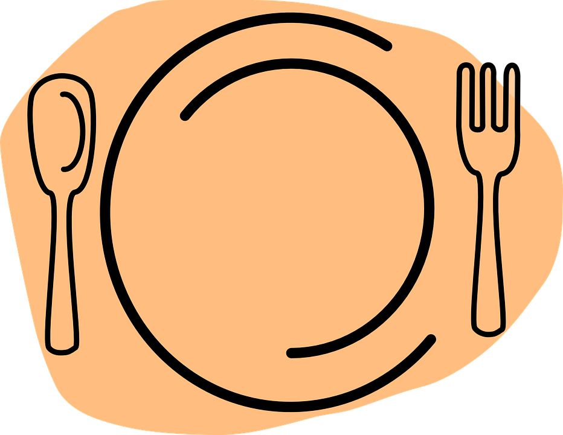
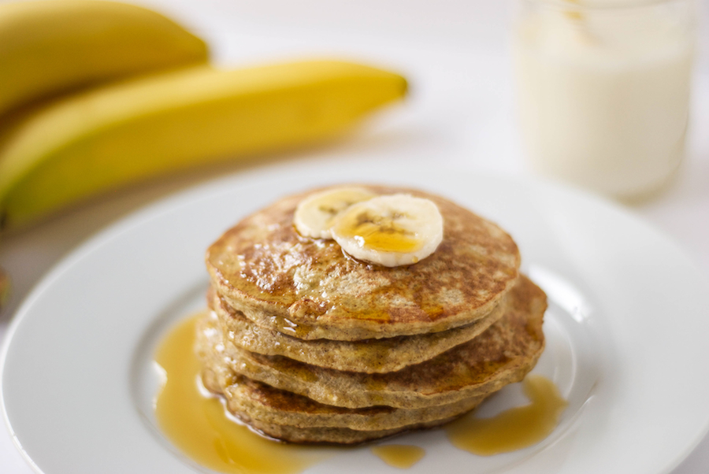
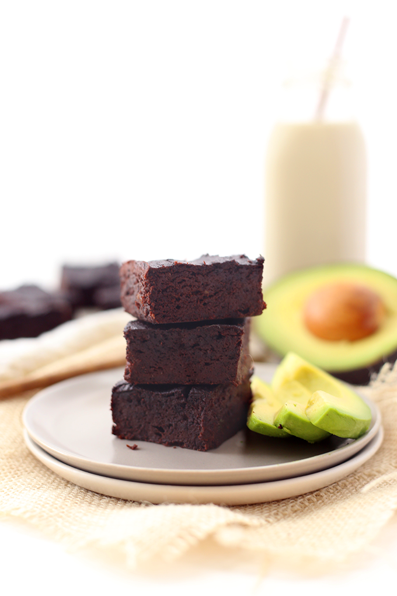
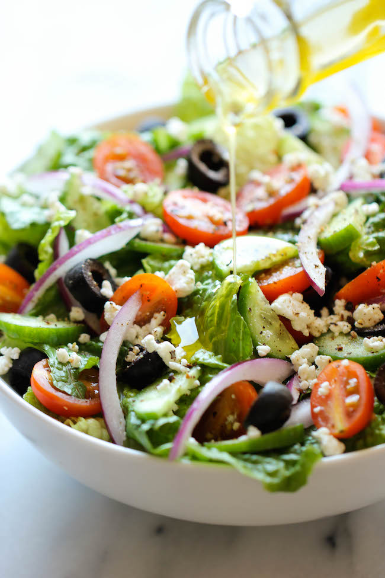
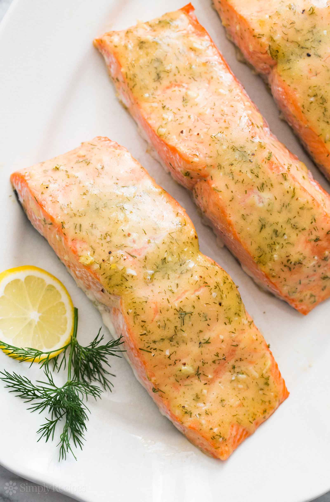
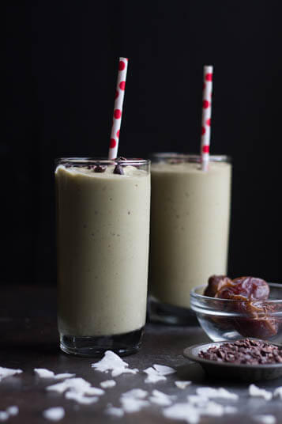

My Favorite Recipes

| Ingredients | Directions |
|---|---|
| 1 medium ripe banana | Put the banana in a bowl and mash with a fork, add the eggs and mix until well combined. |
| 2 large eggs | Put the oats in a blender and blend until fine. Add the blended oats and cinnamon to the banana mix, and stir well. |
| ⅓ cup oats | Heat a skillet over a medium heat with a dash of vegetable oil. Pour ¼ cup of the mixture into the skillet, cook on one side for about 1.5 minutes, then turn and cook on the other side for about 1 minute. |
| ¼ tsp cinnamon | Serve (with or without maple syrup/honey) and enjoy. |

| Ingredients | Directions |
|---|---|
| 1 large avocado | Preheat oven to 350 degrees F. |
| 1/2 cup unsweetened applesauce | In a blender or food processor combine avocado, applesauce, maple syrup and vanilla. |
| 1 tsp vanilla extract | Add these ingredients to a large bowl and whisk in eggs.Then add the dry ingredients. |
| 3 large eggs | Pour ¼ cup of the mixture into the skillet, cook on one side for about 1.5 minutes, then turn and cook on the other side for about 1 minute. | 1/2 cup coconut flour | Grease an 8 x 8 inch baking dish with coconut oil and add batter. | 1/2 cup unsweetened cocoa powder | Place in oven to bake for 25 minutes (slightly less for fudgier brownies or slightly longer for more cake-like brownies). |
| 1/4 tsp sea salt | Allow to cool for 20 minutes before cutting into 16 brownies. |
| 1 tsp baking soda | Keep them on the counter in an airtight container at room-temperature for up to 2 days or for a longer shelf-life store in the fridge or freezer. |

| Ingredients | Directions |
|---|---|
| 5 cups chopped romaine lettuce | To assemble the salad, place romaine lettuce in a large bowl; top with red onion, cucumber, tomatoes, olives, goat cheese and pepper, to taste. Pour dressing on top of the salad and gently toss to combine. |
| 1 small red onion, thinly sliced | |
| 1 English cucumber, thinly sliced | |
| 1/2 cup halved cherry tomatoes | 1/4 cup sliced Kalamata olives | 1/4 cup crumbled goat cheese | Freshly ground black pepper |

| Ingredients | Directions |
|---|---|
| 2 garlic cloves, minced | In a medium glass bowl, prepare marinade by mixing garlic, light olive oil, basil, salt, pepper, lemon juice and parsley. |
| 6 tablespoons light olive oil | Place salmon fillets in a medium glass baking dish, and cover with the marinade. |
| 1 teaspoon dried basil | Marinate in the refrigerator about 1 hour, turning occasionally. |
| 1 teaspoon salt | Preheat oven to 375 degrees F (190 degrees C). |
| 1 teaspoon ground black pepper | Place fillets in aluminum foil, cover with marinade, and seal. |
| 1 tablespoon lemon juice | Place sealed salmon in the glass dish, and bake 35 to 45 minutes, until easily flaked with a fork. |
| 1 tablespoon chopped fresh parsley | 2 (6 ounce) salmon fillets |

| Ingredients | Directions |
|---|---|
| 1 banana, fresh or frozen | Place all ingredients in blender. |
| 1 cup coconut milk or nut milk | Process until creamy smooth. |
| 2 dates, pitted | Garnish with cacao nibs and coconut flakes, if desired |
| ½ large avocado, peeled | |
| 1 tsp vanilla extract |